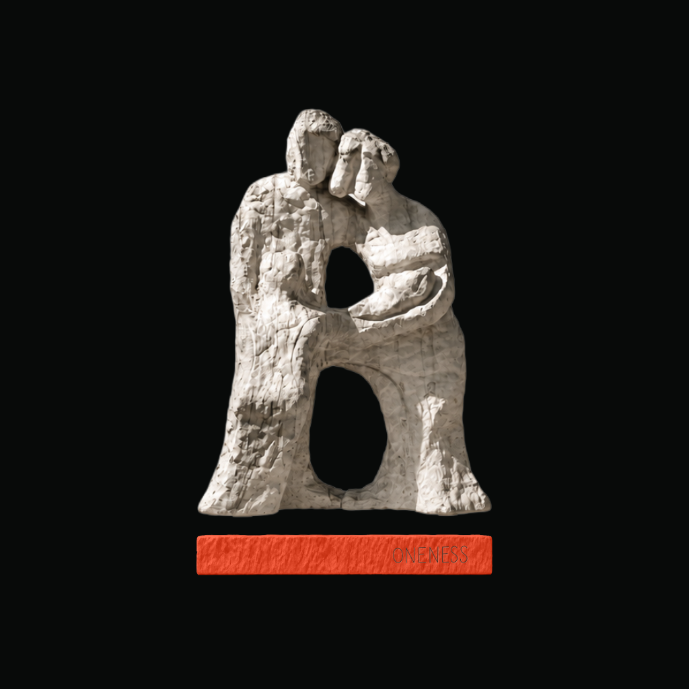
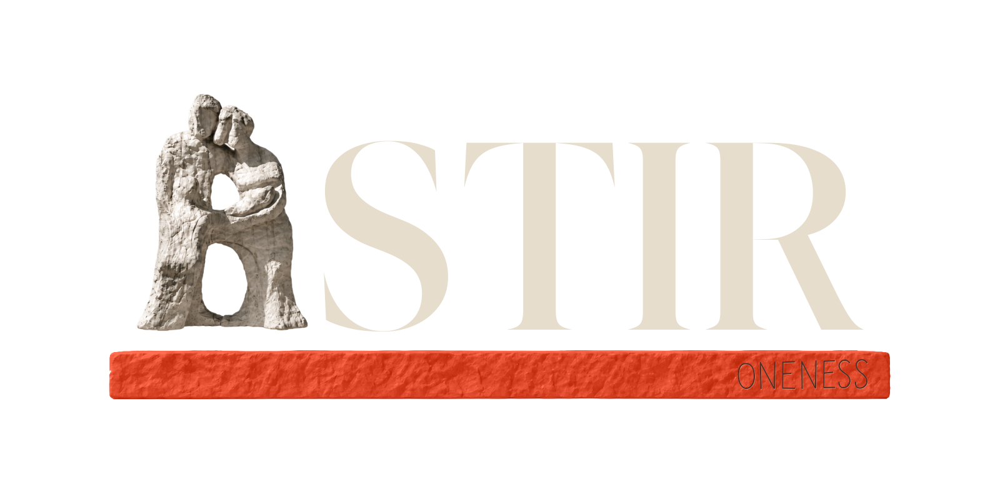

{kind=link}
App icon

Astir60 px
40 px
32 px
54–55 / Narrowing it down
The lettering and spacing from 46. The statue from 50.
Two ways to bring them together, with the taller A locked in.
One thing at a time
The foundation color changes across all three. Height, lettering and spacing stay fixed.
46 and 50 already used the same off-white lettering. This round restores the spacing from 46 and compares the original 36 statue with a warmer color treatment of that same shape.
54 / Original stone, warm type

App icon / Instagram / TikTok
Same statue size in every option. Compare the full base, a base exactly as wide as the statue, and no base. All backgrounds stay black.
The no-base version stays in the comparison because the A reads more clearly to you. A base can still win on appearance; this is a choice to revisit once people see it.
App icon

AstirInstagram profile preview

Places worth coming back to.
Through the people you trust.
TikTok profile preview
@astirYour people. Your places.
All icon and profile downloads are 1024 × 1024 PNGs. The circular previews show the safe crop. Profile handles and layouts are illustrative.
Keep the trail
54 / Original stone, warm type · Signal · 36 original · Statue-width base
The taller statue and 46 spacing are already decided. What remains is statue warmth, foundation color, and the base under the standalone symbol.
Return to the full round 07 ↗{kind=link}